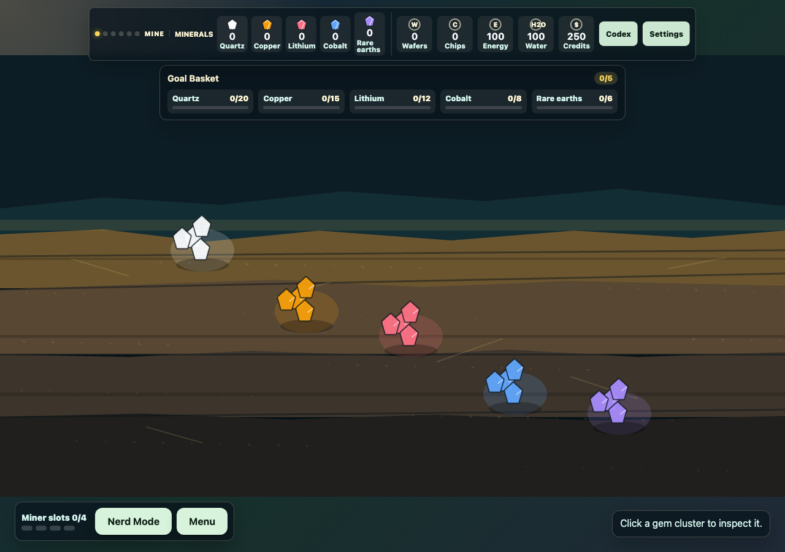
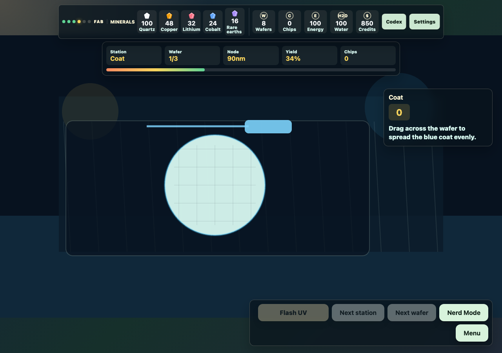

01 / why a game
AI appears weightless on a screen. It is not.
Behind every prompt is a physical chain: minerals pulled from the earth, silicon refined to extraordinary purity, crystals grown and sliced into wafers, circuits fabricated, chips tested and packaged, then racks powered, cooled, and connected.
We usually hide that chain behind one frictionless word: cloud. I built Rock to Rack because I wanted to make the chain visible—not as another diagram or policy memo, but as something a player could touch, manage, and occasionally break.
I work on technology, governance, and power. Semiconductors sit inside all three: they are commercial products, strategic assets, diplomatic pressure points, environmental loads, and the material foundation of the AI boom. An essay could explain that system. A game could make the player depend on it.
A diagram can show sequence. A game can make dependency hurt.
02 / the first 40 minutes
I used frontier models as a compressed game studio.
I did not begin with “make me a semiconductor game.” I defined a player role, a crisis, the industrial stages, the verbs available in each stage, and the idea the player should understand by the end.
- 01Describe the experience.
- 02Generate a playable interpretation.
- 03Run it and find what feels inert.
- 04Revise the rules and interface.
- 05Test again.
Within 40 minutes, the idea crossed the line from explanation into a playable browser game. That result was the playable spine—not every refinement in the version online today. It proved that a player could move from the material supply chain to the operational problem of bringing compute online.
Forty minutes did not eliminate authorship. It moved authorship into framing, judgment, and subtraction.

03 / what I built
Mine → Refine → Grow → Fab → Package → Power
Rock to Rack now has two paths. Crisis Run opens with the city dark and asks the player to place racks, power, cooling, network infrastructure, and batteries, install a chip, and bring Nova—a public-interest AI workload—online before time runs out.
Learn the Chain is the deeper campaign: mine quartz, copper, lithium, cobalt, and rare earths; refine usable inputs; grow and slice a silicon crystal; fabricate circuits; dice, test, bin, and package chips; then install them inside a powered, cooled, networked data center.
Each stage turns an industrial process into a playable verb. The model is deliberately simplified, but the dependency is real: no single object called “AI” arrives by magic. The system only works when the entire chain works.

04 / what the models changed
The models made options cheap. Taste remained expensive.
Frontier models helped turn broad concepts into scenes, rules, interfaces, and working TypeScript. They accelerated simulation logic, responsive layouts, replay behavior, result cards, local saves, and automated checks.
Speed created its own danger. When another panel, mechanic, or explanation can appear in seconds, a project accumulates features simply because features are inexpensive. Early versions sometimes felt like an interactive textbook. The data-center finale risked becoming a dashboard. Helpful fact cards interrupted the play they were meant to support.
The solution was editorial judgment: lead with a crisis, give each scene one strong action, remove what diluted the experience, and make every explanation earn the player’s attention.
05 / what I learned
The real acceleration was getting from an idea to evidence.
I did not have to spend weeks wondering whether a semiconductor supply-chain game could work. I could play the argument almost immediately. Weak ideas failed sooner. Strong ideas became concrete enough to criticize.
The burden of responsibility remained human. I still had to decide what the game claimed, where it simplified reality, which generated ideas deserved to survive, and whether the result worked for someone who had not watched it being made.
The machine accelerated production. It did not supply the reason for building. That part was mine.